Dress Up reports · ^du_report(13) · 2026-10-19 · work in progress · about Hazel
Dress Up in Hazel: the hard part of the drawing is what runs every frame, the music can be computed, and the menus need a layout Hazel lacks
Matthew asked three questions about porting Messed Up Dress Up to Hazel (ticket 402): which parts of the drawing would be hardest for Hazel, whether Hazel can do music, and how to offer the game's menus in Hazel while keeping to Always Be Knolling. He also asked for the game's advanced features, staged as challenges. It builds on ^du_report(8) (the port, piece by piece), ^du_report(5) (the menu rules) and ^report(15) (the game and its livelits, measured side by side). The game at 0.0.334; Hazel on its livelits × modular editors branch (hazelgrove/hazel#2635) at 90ed4505bf.
Short answers.
- The drawing's hard part is not its SVG but what runs around it. A Hazel view can draw every element the game uses (41 SVG element kinds, gradients, clips, masks, filters and animations included). What Hazel lacks is what the game does at run time: motion every frame (a livelit has no clock, and a change costs 0.13 to 1.09 s against a frame's 16.7 ms), measuring the drawn picture (about 100 calls place things on it), its sizes (the greenhouse has 1,906 elements; the largest Hazel picture so far, 570 shapes), and byte-exact numbers: Hazel's
to_fixedand the game'sf1disagree on 5 of 7 values tried. - Music: Hazel can compute it today; playing it takes a JS player or a new builtin. 63% of the game's music code is pure (the tunes, chords, arrangements and the score of note events). A Hazel program computed a 1,216-event score, the size of the forest tune's, in about 0.2 s. A livelit cannot make a sound; Hazel's MVU apps can, a sine beep (
Cmd.PlayTone) with timers, which corrects^du_report(8)'s "no sound binding". - The menus: Hazel meets about two of the nine knolling rules, and the gap is a layout, then speed. Livelits show up inline, stacked in the UX outline, or in a sidebar column; none is a grid of named boxes. The plan: the settings as a tree of modules, a "knolled" UX layout that draws modules as tabs and their members as boxes, and big livelits for the bespoke designers. Even laid out right, each change costs 0.13 to 1.2 s; the rule "keep it fast" waits on Hazel's speed.
- The advanced features fall into six stages, from pictures Hazel can draw today, through small builtins, a clock for livelits, interaction inside the picture and the designers, to the whole game at 60 fps, which waits until a change costs about 16 ms.


1. Which parts of the drawing are hardest for Hazel
What the game's drawing uses (counted in js/, 0.0.334) and what it rests on at run time:
| What the drawing uses | Count |
|---|---|
| SMIL animations (<animate>, animateTransform, animateMotion) | 180 |
| opacity attributes | 430 |
| transforms | 192 |
| clip paths | 104 |
| gradients (linear 37, radial 55) | 92 |
| <use> | 24 |
| <text> | 28 |
| patterns | 7 |
| filters (blur, colour matrix) | 4 |
| masks | 2 |
What the drawing rests on at run time
| What | What needs it |
|---|---|
| Measuring the drawn picture (getBBox, getScreenCTM, getBoundingClientRect, getPointAtLength) | about 104 calls: collision boxes, where tree-room pictures hang, ladders, foam layers, a lifted thing's centre |
| Every frame (requestAnimationFrame 71 lines, performance.now 56) | walking, climbing, treading water, bubbles and balls, the leak, blowing |
| The music's clock (the LFOs) | poses' phases, and 43 places that time scenery to the music |
| The DOM after drawing | the depth sort, the friend put in front of what is behind their feet, reusing unchanged pieces, still pictures on slow computers |
| Seeded randomness | a sine hash, Math.sin(seed·71.3 + i·13.7)·43758.5453, in 467 calls |
The five hardest, ranked
| Feature | Why it is hard for Hazel | The most plausible route | |
|---|---|---|---|
| 1 | Motion every frame | Livelits have no clock, and a change costs 0.13 to 1.09 s, against 16.7 ms a frame. | Hazel computes the poses at sampled phases and writes the animation as SMIL or CSS; JS keeps the frame loop and the simulations. |
| 2 | Measuring the drawn picture | There is no way to measure layout from Hazel; about 104 calls rely on it. | A bounds library in Hazel (boxes from the geometry, with transforms and curves), or a measuring command for views. |
| 3 | Size | The imagination is 2.45 MB; the greenhouse 1,906 elements; Hazel's largest picture so far is 570 shapes. | Static scenery as one picture (an <img> from a Hazel string), only the friend as structured elements; memos keyed by explicit inputs. |
| 4 | Work done on the DOM | The depth sort, the friend's place, piece reuse and still pictures happen after drawing. | The sort and the friend's place in Hazel (they are pure over name, depth and SVG); stills and bitmaps stay in JS. |
| 5 | Byte-exact numbers | f1 is used 7,269 times and differs from to_fixed (below); the sine hash multiplies any 1-ulp difference by 43,758. | An f1-like number-to-text builtin, and a check that sin agrees bit for bit. |
Tried in Hazel: the numbers in a picture
| x | Hazel: to_fixed(x, 1) | The game: f1(x) |
|---|---|---|
| 12.0 | 12.0 | 12 |
| 0.25 | 0.3 | 0.3 |
| -0.25 | -0.3 | -0.2 |
| 1.45 | 1.4 | 1.5 |
| 0.15 | 0.1 | 0.2 |
| 2.35 | 2.4 | 2.4 |
| 7.0 | 7.0 | 7 |
The game's f1 is (Math.round(x · 10) / 10).toString(): it rounds halves up and drops a trailing .0; Hazel's to_fixed(x, 1) keeps the .0 and rounds the binary value. Run with Hazel's command-line tool (013/data/numbers.hz) and the game's f1 in node.
2. Can we do music in Hazel?
| Part of the music code | Lines | What |
|---|---|---|
| Pure | 1,256 | notation and part builders, the 45 tunes and their arrangements, the score (songOf: a sorted list of events, each with a start, length, notes, part and velocity), timing, the LFOs, the mix's maths |
| Run time and controls | 726 | 34 synthesizer instruments in WebAudio, effects and reverb, a scheduler that sends notes 0.5 s ahead on the audio clock, the mixing board, the transport |
Hazel's options
| Option | Possible? | How |
|---|---|---|
| The tunes and the score as Hazel data and functions | Yes, today | a Hazel program computes the events (the try below) |
| A view that plays the archive's recording | Probably (untested) | a view can draw any element, so an <audio> of the tune's MP3 |
| A sine melody from an MVU app | Yes, crudely | Cmd.PlayTone(frequency, ms) with Sub.Every; one oscillator, no scheduling |
| The game's instruments, from a score Hazel computes | With a JS player | the game's own instruments and scheduler, reading Hazel's events as JSON; same events, same sound |
| Raw audio samples computed in Hazel | No | a tune is millions of samples (the forest: about 3 billion evaluation steps) |
Tried in Hazel: a tune's score
| Program | Wall time, three runs (s) | Its work (s) |
|---|---|---|
| the program 0 (start-up only) | 1.47, 1.47, 1.40 | 0 |
| 1,216 events (76 bars of 16 notes) | 1.67, 1.63, 1.64 | about 0.2 |
| 12,160 events (760 bars) | 2.56, 2.60, 2.72 | about 1.2 |
A tune as data, one bar of (note, length) pairs repeated for a form, turned into (start, note, length) events by a recursive Hazel function (013/data/score.hz). Wall time of Hazel's command-line tool on the Ubuntu laptop (Intel i7), three runs each; the work is the difference from the start-up-only run.
3. The menus, knolled, in Hazel
The nine rules of Always Be Knolling (^du_report(5)), and how Hazel's livelits measure up today:
| Rule | Hazel today |
|---|---|
| A box for each thing you can see or hear, named once | Misses: a UX cell is headed by the binding's name, the Projectors card by printed syntax |
| Nesting by boxes alone | Misses in the UX outline (a flat stack); nested livelits could do it |
| Knolled: a grid, things of a kind the same size | Misses: a stack or a column |
| A row on one line | Meets, for a slider |
| Show the thing | Meets: views draw pictures |
| One decision, one place | Partly: one binding, but a box cannot be shown in two places |
| Mirror the picture | Partly: the picture can be a UX cell, not a sticky first card |
| The same at every scale | Misses: three different layouts |
| Keep it fast | Misses: a change costs 0.13 s (Kids' Choice) to 1.2 s (Full Body in the UX outline), against Dress Up's 1.4 ms |
The options
| Option | What it gives, and what it costs |
|---|---|
| One big livelit whose view is the menu | Full control of tabs, grids and pictures; but its open tab and folds live in its model, so every click is an edit (and an undo step) costing about a second; good for bounded designers (the world grid, the castle map, the mixer) |
| A knolled UX layout | Modules as tabs, their members as boxes in a grid, the picture as a sticky first card, tab and fold state kept by the editor, not in the program: meets rules 1, 2, 3 and 8, partly 7 |
| The program organized as the menu | A module per tab and a submodule per box, each setting a livelit; works with today's UX outline, but only as a flat stack |
| An MVU app in the sidebar | Fast, but its state is not program text, so the program cannot read the settings: rewriting the game as an app |
The plan: The program organized as the menu, with a knolled UX layout over it, and big livelits for the bespoke designers: as the game itself has generic boxes for most tabs and its own full screens for music, the world and the castle.
4. The advanced features, staged as challenges for Hazel
| Stage | Features | What Hazel needs | |
|---|---|---|---|
| 1 | Pictures from settings, in Hazel today | the friend, a pose at a given phase, each place as a still picture, the tunes and the score as data | nothing new (byte-exact pictures need stage 2's number builtin) |
| 2 | Small builtins | pictures that match the game's byte for byte, collision boxes from geometry, the depth sort and the friend's place, a score played by a JS player, the archive's recordings | an f1-like number builtin; a bounds library; a score export |
| 3 | A clock for livelits | walking, crawling and swimming poses following the music's LFO; scenery animations written by Hazel; bubbles and foam on a timer | a subscription for livelits (a tick, the audio clock) |
| 4 | Interaction inside the picture | click to walk (walks planned around what is in the way), click to sit, ladders and climbing, pits and trap doors, lifting and dropping things | pointer events on a view's picture, stage 2's bounds, updates at frame rate |
| 5 | The designers and the menus | the world designer and the castle map as big livelits; the settings in a knolled UX layout | the knolled layout; per-livelit state outside the program |
| 6 | The whole game at 60 fps | everything, as the game plays today | a change costing about 16 ms; today 0.13 to 1.09 s |
What next
- Port the face alone (431 lines) and time it, as
^du_report(8)proposed; add an f1-like builtin first, so the picture can be compared byte for byte. - Port the forest tune's score: compare its events one by one with the game's songOf("forest"), then play them through the game's own instruments from JSON.
- Try a view with an <audio> of the archive's recording, the cheapest sound in Hazel today.
- Prototype the knolled UX layout on one tab (the friend's face): modules as boxes, the picture as the first card.
- Ask the Hazel team about a clock (a subscription) for livelits: it unlocks stage 3 and most of stage 4.
How this was put together
- Three read-only passes over the code on 2026-10-19: the game's drawing, its music and its menus (js/ at 0.0.334, the picture archive of 0.0.304, ^du_report(5) and (8)), and Hazel's livelits branch (hazelgrove/hazel#2635) for what a view can draw, what a livelit can do, and where livelits show up. Counts are of lines in js/; sizes are from the archive.
- Two tries, run with Hazel's command-line tool (its run command) on #2635 at 90ed4505bf, on the Ubuntu laptop (Intel i7): the number formatting (013/data/numbers.hz) and the score (013/data/score.hz, score760.hz), three runs each for the timings.
- Hazel's speed figures (0.13 to 1.09 s a change, 570 shapes) are from ^report(15) and the Hazel reports, not measured again here.
- The data: in this page's report-data element and in
013/data/(report.json, and the two Hazel programs tried); the page is made by013/drivers/build.py.